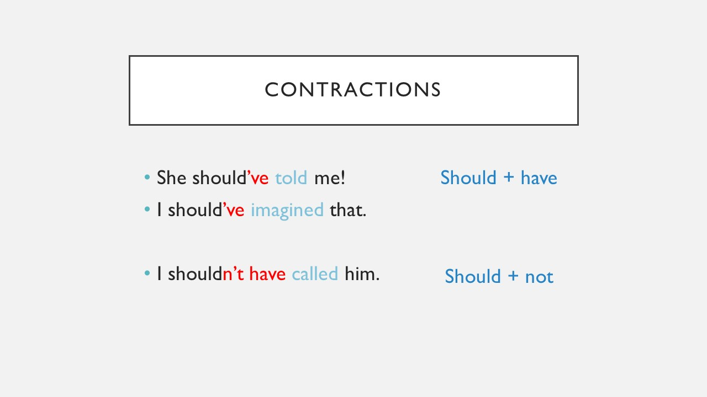
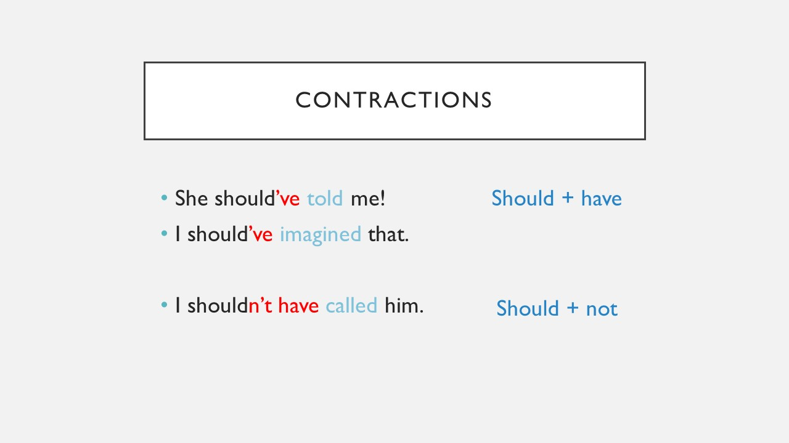

Use these contractions!
Contractions are very common in spoken English. Observe these two combinations to form contractions:

Contractions are very common in spoken English. Observe these two combinations to form contractions:

Licensed under the Creative Commons Attribution Share Alike License 4.0